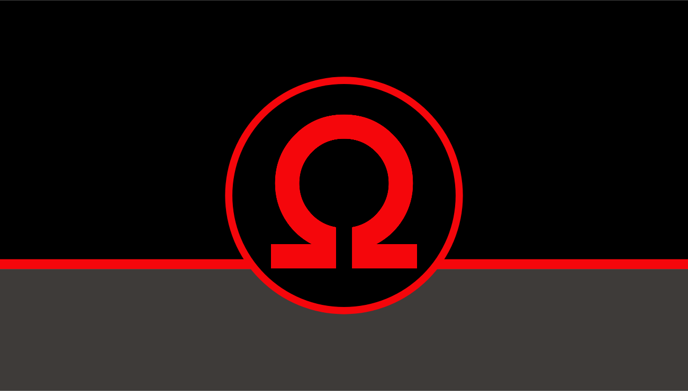
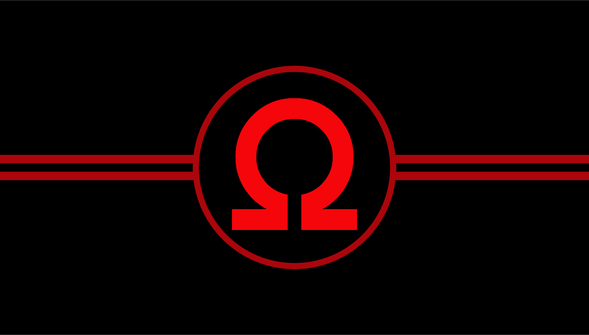

Fleet Flags

Peace Fleet
Role: Scientific & Exploration
Ships: 12 (Scouts: 6, Science Vessels: 6)
Active Missions: Survey Sector X12, Research Station Theta
Role: Scientific & Exploration
Ships: 12 (Scouts: 6, Science Vessels: 6)
Active Missions: Survey Sector X12, Research Station Theta

Defense Fleet
Role: Colony Defense
Ships: 20 (Frigates: 10, Destroyers: 10)
Active Missions: Patrol System Beta, Rapid Response Sector 3
Role: Colony Defense
Ships: 20 (Frigates: 10, Destroyers: 10)
Active Missions: Patrol System Beta, Rapid Response Sector 3

Strategic Fleet
Role: Heavy Combat & Operations
Ships: 35 (Destroyers: 20, Flagships: 5, Frigates: 10)
Active Missions: Forward Defense Line, Tactical Exercises
Role: Heavy Combat & Operations
Ships: 35 (Destroyers: 20, Flagships: 5, Frigates: 10)
Active Missions: Forward Defense Line, Tactical Exercises

Grand Admiral
Role: Supreme Command
Ships: 50+ (All Classes)
Active Missions: Oversight of All Fleets, Strategic Planning
Role: Supreme Command
Ships: 50+ (All Classes)
Active Missions: Oversight of All Fleets, Strategic Planning